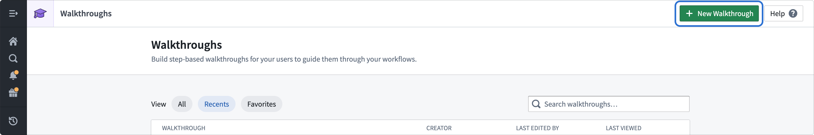
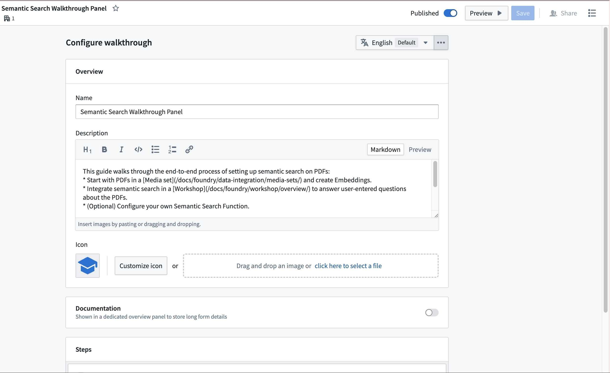
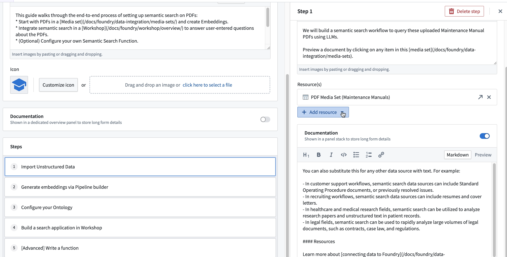
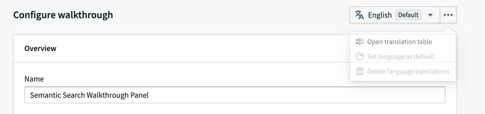
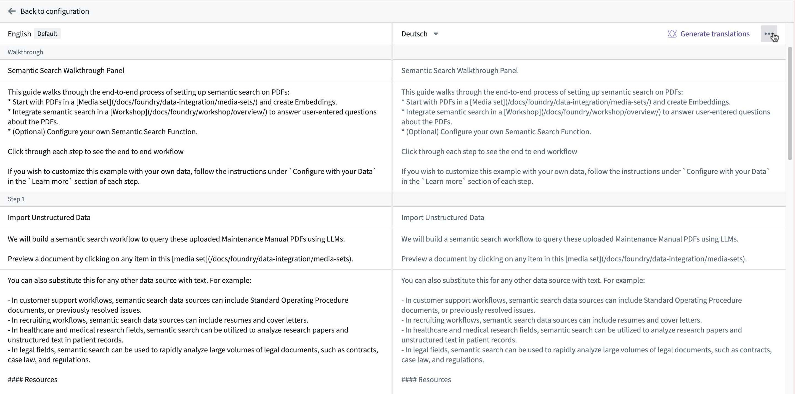

Note: Both the name and description will appear in the Walkthroughs landing page, and can help users determine the appropriate walkthroughs to complete.
Note that the Documentation panel and step descriptions support a subset of Markdown based on the CommonMark specification â, such as headers, lists, links, and code blocks. This subset is narrower than the Markdown available in other Foundry applications.
To make changes to a walkthrough after it has been created, open the walkthrough resource (for example, from the Walkthroughs application, your project's file browser, or search) and select Edit. This opens the same editor used during creation, where you can update the name, description, icon, steps, and associated resources.
The primary elements in a walkthrough are called steps. Each step should include a thorough description of the actions that users should perform. You can optionally include links to related resources, or add documentation in the Documentation configuration during setup. This will be discoverable through the Learn more option during the walkthrough. We recommend only adding a single resource to a given step to streamline end-user experience. To preview a walkthrough, select Preview on the top right at any time.
:::callout{theme="neutral"} You can open and close the Preview sidebar while the editor remains active. Changes you make in the editor update in the Preview sidebar in real time. :::

To translate a walkthrough, select the language dropdown menu.

You can manually input translations, or use AIP to generate suggested translations for each description in the walkthrough.
